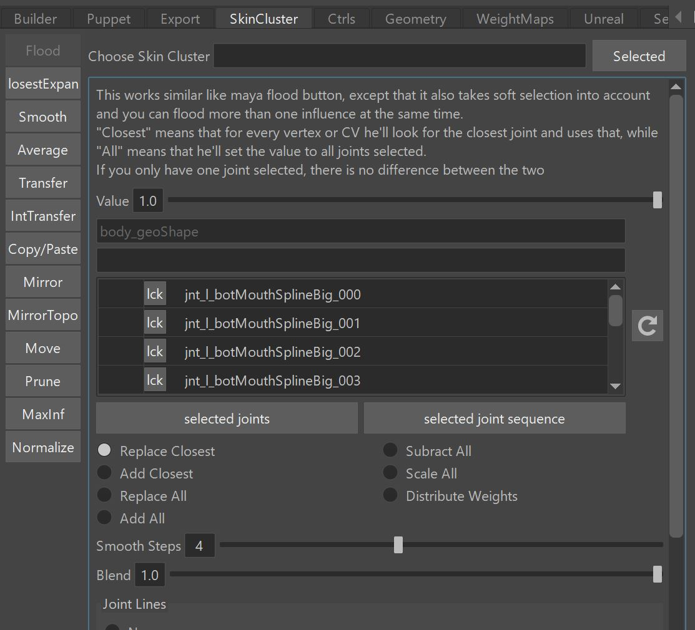

SkinCluster
Kangaroo's Skinning Tools are an alternative to weight painting. The idea is that you always select vertices with soft selection, and then click the buttons. This usually keeps the weights cleaner than if you were using painting tools.

The best way to learn about the skinning tools is by watching this video.
Use this page more as a table of contents. You'll see a lot of direct links to the proper time stamps of that video.
Choose SkinCluster
The skinning tools work for multiple skinClusters, and the attribute to specify which one is Choose SkinCluster. If you leave it empty, it chooses the default one.
Video
Check here to see in action how Choose SkinCluster works.
Note
One thing that got added after the video was created is that you can also specify suffixes in the Choose SkinCluster
field, such as __BEND or __ZIPPER.
This makes it easier when you have more meshes all with same skinClusters suffixes.
Flood
It's similar to what the Maya Flood button is doing, but here you have more options:
- Select more than one influence at the same time. It assigns the weights by closest joints to each vertex, and smoothes on top (you can control the smoothness with the Smooth Steps
- You can do more than one influences at the same time
- You can flood joints that are not in the skinCluster yet, he'll ask you if they should be added
Video
Flood is the first thing shown in the Video
One thing not fully explained in the video is Joint Lines. Joint Lines are ...
Distribute
Distribute Weights is an option inside the Flood tool. This gets overlooked a lot, but it's one of those powerful
features that make Kangaroo Skinning Tools special!
It first gathers all the weights assigned to the selected joints, and then reassigns the weights based
on closest joints to each vertex.
This is useful for:
- when you changed the joint positions
- if you've bound them with normal Flood settings, but with bad Smooth Steps
Tip
Most of the time when using the Distribute options we can just select the whole mesh. Because he won't touch the vertices that didn't have weights from the selected joints.
Video
Check Distribute Option here
ClosestExpand
Closest Expand tool is for situations such as lips or eyelids, where you have joint splines and each joint is located
on a vertex.
It basically finds the closest vertices for each joint, and then expands the influence. How much you expand is defined
with the Expanded Full Weight Loops and Expanded Fade Out Loops.
The tool also works for high density meshes where you are skipping joints, for example you only have a joint for each second or third vertex. If you are skipping many joints, keep an eye on the Max Connection Path Count option.
Distribute
The ClosestExpand tool also comes with a Distribute attribute. The idea is the same as with the one in the Flood tool - it first
gathers all the weights that are already on the joints, and uses that as a mask for the new operation.
Make sure to set Full Weight Loops to a higher value such as 30, because the fade out amount is already handled through
the previous weights.
This is useful when you've already generated the weights and then you did changes to the setup.
Video
Check here to see ClosestExpand in action
Smooth
Well - what can I say, the properly most popular tool in the set.
But don't overuse it!!
Video
Check Smooth Tool here
Average
This averages the weights. Often you use it on buttons. It can also average islands separately, which is for example when you have a lot of buttons combined into a single mesh.
Video
Check Average Tool here
Transfer
Transfers weights from another mesh. Make sure you try using it together with Vertex (Soft) Selection! But there's also a lot of other imporant hidden features, best watch the video from the link below:
Video
Check Average Tool here
IntTransfer
Like Transfer, but transfers from within the same mesh.
To use that properly, just select a few vertices without Soft Selection. Because the algorithm will for each selected
vertex find the the closest non-selected vertex and transfer from that.
Video
Check here to see IntTransfer in action
Copy/Paste
Select a vertex to copy from, and click Copy, then select vertices you want to paste to, and click Paste.
On the Paste you can also do Soft Selection, and also you can paste onto a different mesh. It'll just ask you
if he should assign the new influences.
Video
Check here to see copy/paste in action.
MirrorTopo
This is using the Edgeflow Algorithm where he takes an edge in the middle, and searches through the whole mesh to find
which vertex belongs to which.
It works on meshes that have different shape left and right, as long as the topology is symmetrical. By Topology we refer
to the way how edges are connected together.
Video
Check here for better explanation.
Mirror
For all cases where we don't have Symmetrical Topology, we use the standard Mirror tool. This also works with multiple meshes selected, and he can mirror from left to right meshes.
Mirror Middle is the second button in that tool - it just averages left/right, best apply it just to vertices close to the symmetry line.
Video
Check here to see it in action.
Just the Mirror Middle is a new button and therefore not shown in the video.
Move
Moves weights between joints.
You specify joints in the tab. Weights from joints in the left column get assigned to the joints in the right column.
Sounds simple, right? Well, it also has a ton of hidden options:
- You can move weights from one or more than one joints to one or more than one joints.
- The left column in the tab can have * and ? in the name.
- For the right ones - if you add a comma (","), he does text replacing (left part of the comma with right part) example: "^, namespace0:" will find the To joints in the namespace "namespace0:"
- You can also add joints to the columns by right click Set From Selected
Video
Check here to see it in action.
Tip
This is also a great tool to use in Python for creating your own tools.
import kangarooTabTools.weights as weights
weights.moveSkinClusterWeights(sMesh, xJoints={'jnt_m_faceZero':'jnt_m_zero'})
Prune
Similar to the Maya prune, but first assigns stuff into weight islands. This means you can prune with a higher value without getting weight artefacts.
Video
Check here for better explanation.
Actually to get the full picture it's best starting from Why can I not paint Weights Kangaroo Skin Tools?.
MaxInf
This makes sure that each vertex has not more than a specific amount of influences. Very important when you are rigging for Game Engines.
Only works on full meshes (no vertex selection)
Video
Check here to see it in action.
Normalize
Nothing fancy, just does what the maya normalize does, except that you can choose a specific skinCluster
Only works on full meshes (no vertex selection)
Python
You can also run those tools in python
Video
Check how to run those tools in python here